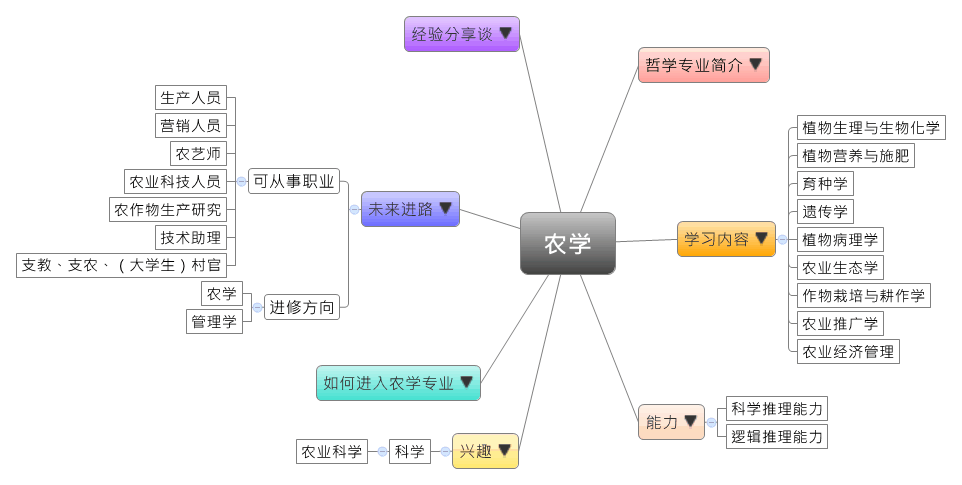

- 专业大观园
-

- 专业介绍
-
什么是农学？
农学是农业科学中的一门研究自然与经济农业发展规律的专业，其广泛的研究领域包含农、林、牧、渔等，而狭义的定义则是指农作物的栽培与育种等研究。随着农业科技不断创新，生物科技和信息技术在农业中广泛交叉应用，农学专业所钻研的领域包括农作物生长规律、农作物与外界环境的互动关系、病虫害防治、种植方式与技术、土壤与营养、遗传与育种等。在职场上，过去测产、育种的方式耗时耗力，现在可以运用遥感技术、卫星技术、基因技术等来实现；在生活上，不见得要人人下地种田才能获得食物，但也得知道粮食如何来、从何而来，以及大自然与食物的关系。
农学专业主要培养具备农作物的生产、遗传、育种，以及种子生产与经营管理等方面的基本理论、知识和技能，能在农业及相关部门或单位从事与农学有关的技术、设计、推广、开发、经营、管理、教学，以及科学研究等工作的高级科学技术人才。

记录温室蔬菜生长情形 
农地作物采样课程
- 学习内容
-
农学专业学生主要学习农业生物科学、农业生态科学、作物生长发育，以及遗传规律等方面的理论和知识，学科重视作物育种、栽培与耕作、种子生产与检验基础能力，所以学生须接受作物生产和新品种选育等训练。
本专业是研究农业发展的自然和经济规律，其领域与农业环境、农作物、畜牧生产、农业工程，以及农业经济等相关。农学专业主干课程有：植物生理与生物化学、植物营养与施肥、育种学、种子学、遗传学、植物病理学、农业昆虫学、农业生态学、作物栽培与耕作学、田间试验设计、农业经济管理、农业推广学、农业气象......等。另有实践性教学环节，包括生产实习、课程设计、科研训练、生产劳动、社会实践等，一般安排不少于30周。
本专业可以习得的知识与获得之能力、技能列点：第一，掌握生物和农学学科的基本理论与知识；第二，熟悉农业生产、农村工作的有关方针、政策和法规，以及具备基础的农作物生产技能和方法；第三，具备农业可持续发展的意识和基本知识，以及农业生产和科学技术的发展趋势。
- 能力
-
农学专业学生，需具备以下能力：
相关性向能力 说明 科学推理能力  能推算作物生产量对农业经济的影响
能推算作物生产量对农业经济的影响
推测作物生长过程所需肥料种类与数量
操作生物技术实验，进行基因转殖及品种改良逻辑推理能力 认识农业生产与农村工作的关系
理解会影响农作物生产的各个影响因素创意能力 运用多元创意的平台推广农业与相关作物
能依据不同土壤、水文、气候等环境因素规画作物生产
- 兴趣
-
若你对下列活动或事物有高度兴趣，可考虑进入农学专业学习：
科学 农业科学 喜欢亲自动手进行农作物的栽植与育种
对遗传与基因改良的实验与相关活动感兴趣
喜爱各种农作物，并乐于参与农业事务的推广
- 如何进入此专业
-
下面列举开设农学专业的211工程重点大学院校：
- 未来进路
-
可从事职业
农业类人才逐渐成为职场新宠，生态、营养、动植物检疫、食品加工、克隆、农药、化肥、农产品的国际贸易、农村社会发展与开发等议题受到关注，新世代中国所需的农业科技人才越来越多。农学专业毕业生的主要就业方向包括农业与园林等公务部门、科研单位、农业技术推广中心，以及种子、农药、化肥相关的农业企业，多半从事教学、科研、技术开发、生产、销售、管理等工作。在工作职场上皆能发挥作物基因改良、农业推广与改造等专长：
行业 职业 （农、林、鱼、牧业等）农场、技术推广中心、农业类企业 生产人员、营销人员、研发人员 农业类院校 农业专业教师、教授 省市、乡镇的农业、园林及植物科研单位 农艺师、农业科技人员、农作物生产研究、技术助理 国家、省、市农业行政管理部门 支教、支农、（大学生）村官 进修方向以下列举农学专业毕业生可以继续修读之学科门类、一级学科与硕士点：
学科门类 一级学科 硕士点 农学 作物学作物学、作物遗传育种、农业地质、作物生物技术 农业资源与环境土壤学、植物营养学、农业气象学、农业环境保护 畜牧学动物营养与饲料科学、动物遗传育种与繁殖、畜牧学、动物生产、畜禽安全生产与控制、动物健康与安全生产 林学园林植物与观赏园艺、水土保持与荒漠化防治、野生动植物保护与利用、林木遗传育种、林木基因组与生物信息学 水产水产养殖、渔业资源、捕捞学、渔业环境保护与治理、增殖养殖工程、水产动物医学 草学草地资源利用与保护、饲草遗传育种与种子科学、草地生物多样性、草地保护学 农业推广硕士农村与区域发展、食品加工与安全、农业信息化、农业机械化、农业资源利用、农业科技组织与服务、设施农业 管理学 农林经济管理农业经济管理、农村发展、农业信息分析学
- 经验分享谈
-
杂交水稻之父——袁隆平
袁隆平，中国杂交水稻育种专家，也是中国研究与发展杂交水稻的开创者，被誉为“世界杂交水稻之父”。
1964年开始研究杂交水稻，1975年研制成功杂交水稻制种技术，从而为大面积推广杂交水稻奠定了基础。1985年提出杂交水稻育种的战略设想，为杂交水稻的进一步发展指明了方向。1986年袁隆平提出了杂交水稻的育种战略。这项战略构想的提出，为中国已取得三系法杂交水稻研究、开发成功后开展杂交水稻新探索指明了方向。历经九年的艰苦攻关，1995年两系法杂交水稻取得了成功，它的成功是作物育种上的重大突破，再次体现了以袁隆平为首的中国杂交水稻科技工作者的聪明智慧，继续使中国的杂交水稻研究水平保持了世界领先水平。
从事杂交水稻研究半个世纪，袁隆平是一位真正的耕耘者。他不畏艰难，甘于奉献，可说是当代神农。50多年来，始终在农业科研第一线辛勤耕耘、不懈探索，为人类运用科技手段战胜饥饿带来绿色的希望和金色的收获。他的卓越成就，解决了中国人民的温饱，而且保障了国家粮食的安全。 【资料来源：百度百科. 袁隆平】